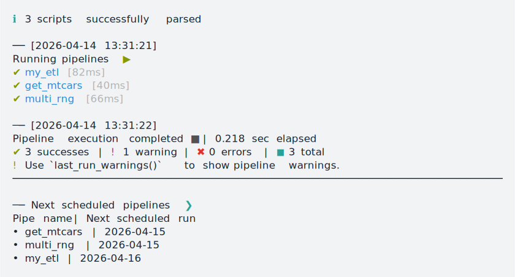

maestro is a lightweight framework for creating and orchestrating data pipelines in R. At its core, maestro is an R script scheduler that is unique in two ways:
- Stateless: It does not need to be continuously running - it can be run in a serverless architecture
- Use of rounded scheduling: The timeliness of pipeline executions depends on how often you run your orchestrator
In maestro you create pipelines (functions) and schedule them using roxygen2 tags - these are special comments (decorators) above each function. Then you create an orchestrator containing maestro functions for scheduling and invoking the pipelines.
Installation
maestro is available on CRAN and can be installed via:
install.packages("maestro")Or, try out the development version via:
devtools::install_github("https://github.com/whipson/maestro")Project Setup
A maestro project needs at least two components:
- A collection of R pipelines (functions) that you want to schedule
- A single orchestrator script that kicks off the scripts when they’re scheduled to run
The project file structure will look like this:
Use maestro::create_maestro() to easily create this project structure in a blank R project.
Let’s look at each of these in more detail.
Pipelines
A pipeline is task we want to run. This task may involve retrieving data from a source, performing cleaning and computation on the data, then sending it to a destination. maestro is not concerned with what your pipeline does, but rather when you want to run it. Here’s a simple pipeline in maestro:
#' Example ETL pipeline
#' @maestroFrequency 1 day
#' @maestroStartTime 2024-03-25 12:30:00
my_etl <- function() {
# Pretend we're getting data from a source
message("Get data")
extracted <- mtcars
# Transform
message("Transforming")
transformed <- extracted |>
dplyr::mutate(hp_deviation = hp - mean(hp))
# Load - write to a location
message("Writing")
# write.csv(transformed, file = paste0("transformed_mtcars_", Sys.Date(), ".csv"))
}What makes this a maestro pipeline is the use of special roxygen-style comments above the function definition:
#' @maestroFrequency 1 dayindicates that this function should execute at a daily frequency.#' @maestroStartTime 2024-03-25 12:30:00denotes the first time it should run.
In other words, we’d expect it to run every day at 12:30 starting the 25th of March 2024. There are more maestro tags than these ones and all follow the camelCase convention established by roxygen2.
Orchestrator
The orchestrator is a script that checks the schedules of all the pipelines in a maestro project and executes them. The orchestrator also handles global execution tasks such as collecting logs and managing shared resources like global objects and custom functions.
You have the option of using Quarto, RMarkdown, or a straight-up R script for the orchestrator, but the former two have some advantages with respect to deployment on Posit Connect.
A simple orchestrator looks like this:
library(maestro)
# Look through the pipelines directory for maestro pipelines to create a schedule
schedule <- build_schedule(pipeline_dir = "pipelines")
# Checks which pipelines are due to run and then executes them
output <- run_schedule(
schedule,
orch_frequency = "1 day"
)
The function build_schedule() scours through all the pipelines in the project and builds a schedule. Then run_schedule() checks each pipeline’s scheduled time against the system time within some margin of rounding and calls those pipelines to run.